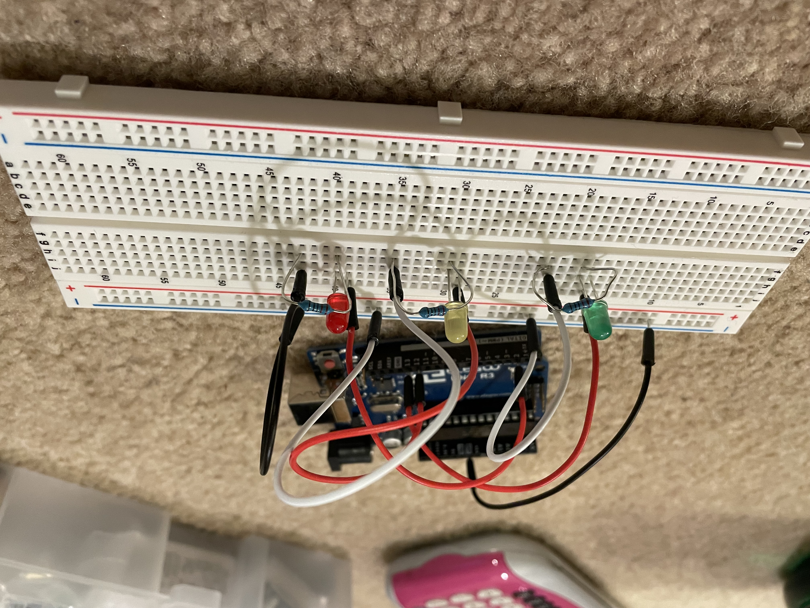

Alissa Acheson's Assignment 1!


Above is the circuit that contains 3 LEDs, a green, yellow and red one. They are each limited with a 220 resistor.
-1.png)
-2.png)
Above is the calculations for the type of resistor used and the schematic of the circuits.
//constant ints wont change, easier to change up pins
const int GreenPin = 13; //number of Green LED pin
const int YellowPin = 12; //number of Yellow LED pin
const int RedPin = 2; //number of Red LED pin
void setup() {
pinMode(GreenPin, OUTPUT); //intialize pin 13 as an output, connected to power and ground
pinMode(YellowPin, OUTPUT); //intialize pin 12 as an output, connected to power and ground
pinMode(RedPin, OUTPUT); //intialize pin 2 as an output, connected to power and ground
}
// the loop function runs over and over again forever
void loop() {
digitalWrite(GreenPin, HIGH); // turn LED on connect to power
delay(1000); // wait for a second
digitalWrite(GreenPin, LOW); // turn the LED off connect to ground
delay(500); //wait for half a second
digitalWrite(YellowPin, HIGH); // turn LED on connect to power
delay(1000); // wait for a second
digitalWrite(YellowPin, LOW); // turn the LED off connect to ground
delay(500); //wait for half a second
digitalWrite(RedPin, HIGH); // turn LED on connect to power
delay(1000); // wait for a second
digitalWrite(RedPin, LOW); // turn the LED off connect to ground
delay(500); //wait for half a second
}
Below is the final operation, using a GIF the lights blink on one second then turn off a half second, but they go in succession, looped to go on forever.